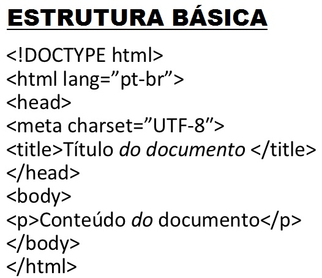
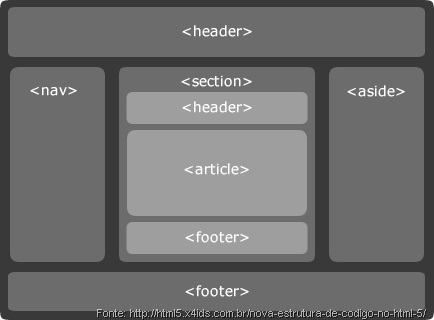

HTML5
HTML significa HyperText Markup Language e está presente nas páginas da internet, apesar de não serem vista pelo usuário, o HTML consiste em estruturar seu layout e renderizar o código. O HTML trabalha com tags, que são marcações em inglês para inserção de elementos e organização hierárquica do código fonte, tornando essa linguagem a mais simples e de fácil memorização. Depois de 10 anos, foi lançado pela W3C a nova versão do HTML.

LINHAS DE CÓDIGO
DOCTYPE
O Doctype indica para o navegador e para outros meios qual a especificação de código utilizar.O Doctype não é uma tag do HTML5, mas uma instrução para que o browser tenha informações sobre qual versão de código a marcação foi escrita.
O ELEMENTO HTML5
O código HTML é uma série de elementos em árvore onde alguns elementos são filhos de outros e assim por diante. O elemento principal dessa grande árvore é sempre a tag HTML5.
html lang="pt-br"O atributo LANG é necessário para que os user-agents saibam qual a linguagem principal do documento.
HEAD
A Tag HEAD é onde fica toda a parte inteligente da página. No HEAD ficam os metadados. Metadados são informações sobre a página e o conteúdo ali publicado.
METATAG CHARSET
O atributo charset serve para indicar o formato de codificação de caracteres utilizado no documento.
ASCII, UTF-8, ANSI e ISO-8859-1 são exemplos de charsets.
meta charset="utf-8"
TAG LINK
Há dois tipos de links no HTML5: a tag A, que são links que levam o usuário para outros documentos e a tag LINK, que são links para fontes externas que serão usadas no documento.
SEMÂNTICA DAS NOVAS MARCAÇÕES DO HTML5

| HEADER | É usado para definir o cabeçalho de uma página ou sessão, e pode conter logo, títulos, menu de navegação, campo de busca, etc. |
| ARTICLE | O novo elemento ARTICLE do HTML5 serve para identificar um conteúdo independente e de maior relevância dentro da página, que pode ser distribuido via feed, como um post, artigo ou bloco de comentários. |
| SECTION | O menos especifico entre as novas tags. A diferença do SECTION para um DIV é que o primeiro serve para dividir o conteúdo em diferentes sessões, que podem conter elementos como HEADER ou ARTICLE, enquanto o segundo divide qualquer conteúdo, sem uma finalidade específica. |
| NAV | Serve para agrupar uma lista de links para outras partes do site, seja essa lista de navegação local ou global. Esses blocos de links podem estar em diferentes partes do layout, como no cabeçalho ou no rodapé. |
| ASIDE | O novo elemento ARTICLE do HTML5 serve para identificar um conteúdo independente e de maior relevância dentro da página, que pode ser distribuido via feed, como um post, artigo ou bloco de comentários. |
| FOOTER | Representa o rodapé de um documento ou de uma sessão específica do mesmo, podendo conter informações relacionadas ao autor e ao copyright, blocos de navegação ou links relacionados. |